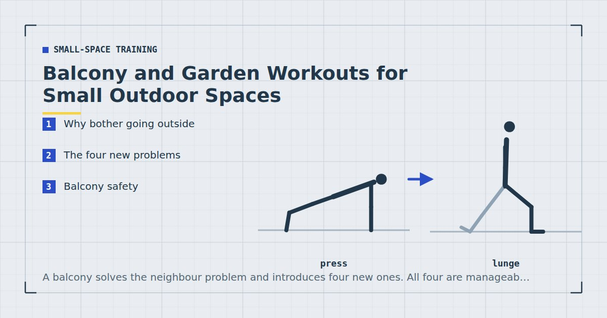

Small-Space Training
Balcony and Garden Workouts for Small Outdoor Spaces
A balcony solves the neighbour problem and introduces four new ones. All four are manageable, and the trade is usually worth making.

If your main training constraint is a neighbour beneath your floor, a balcony changes the calculation entirely. A concrete balcony slab is typically cantilevered from the building structure and transmits very differently from a suspended internal floor — and in many cases there is simply nobody underneath.
It also introduces problems that an indoor space does not have, and one of them is a genuine safety matter.
Why bother going outside
Noise stops mattering as much. The main win. Impact exercises that are out of the question indoors often become viable.
Temperature. Indoor training in a small flat gets hot quickly, particularly anything continuous. Outside you can work harder before overheating becomes the limiting factor.
Daylight. Worth something in itself, particularly for anyone training early or in winter. The evidence for daylight exposure affecting sleep timing is reasonable, and sleep interacts with training in both directions.1
It is a different room. Underrated. A change of setting reduces the sense that training is one more thing happening in the same space as everything else.
The four new problems
1. Space, usually severe. A typical flat balcony is 1.5 to 3 metres long and often under 1.2 metres deep. That rules out anything requiring you to lie down lengthways — the per-exercise measurements are in how much floor space you need.
2. Surface. Balcony floors are usually concrete, tile or decking. All are hard, and tile is slippery when wet. A mat is not optional here.
3. Privacy. You are visible to neighbours and often to the street. This bothers some people a great deal and others not at all, but it is worth deciding before you find out mid-session.
4. Load limits. The one that genuinely matters, and it is covered below.
Balcony safety
Balconies are engineered for a specified load, and older or poorly maintained ones have failed. Do not do anything that generates impact forces — jumping, skipping, plyometrics — on a balcony unless you know its condition and construction. Static and slow exercises generate loads comparable to standing, which is what balconies are designed for; repeated impact does not. If your building has any history of structural concerns, or the balcony shows cracking, corrosion at the fixings, or movement underfoot, train indoors and report it.
Also: never use a balcony railing to support your bodyweight for rows, dips or stretching. Railings are designed to resist a horizontal push, not to hold a person's weight in tension or shear.
That reads as alarmist and is not. The specific risk is repeated impact loading on a cantilevered structure of unknown condition, and the mitigation costs you nothing because low-impact training is what most flats require anyway — see no-jump cardio.
Exercises that suit a balcony
Given the space and the load considerations, the good options are standing, slow and static.
Standing work. Split squats, reverse lunges, sit-to-stands, calf raises, standing hip hinges. All need under a square metre and generate no impact — the full set is in standing workouts.
Push-ups against the wall or the railing base. The building wall is solid; use that rather than the railing.
Band work. A band anchored around a solid door frame just inside gives you rows and pulldowns while you stand outside. This is the neatest solution to the pulling problem on a balcony — see the resistance bands guide.
Isometrics. Wall sits, planks if the depth allows, and holds. Static loading is exactly what a balcony handles best.
Carries. If the balcony is long enough, walking with a heavy object in one hand is an excellent trunk exercise that needs no floor space beyond a path.
A balcony session
Twenty minutes, standing, no impact, minimal footprint.
- Split squat holding the wall — 3 × 10–12 each leg
- Wall push-up or incline push-up — 3 × 12–20
- Band row anchored indoors — 3 × 12–15
- Standing hip hinge — 3 × 15
- Wall sit — 3 × 40 seconds
- Suitcase carry, if length allows — 3 × 30 seconds each side
That covers all five movement patterns without lying down, without impact, and in about a square metre.
Static and slow is what a balcony is built for. Impact is what it is not.
If you have a small garden
Most of the above relaxes. Ground-level surfaces have no load limit worth worrying about, so impact work becomes available, and there is usually room to lie down.
Two things change instead. Grass is compliant and uneven, which makes single-leg work unreliable — the balance rather than the leg becomes the limiting factor. A paving slab or a firm mat under the standing foot fixes it, in the same way described in carpet vs hard floor.
A garden gives you anchor points. A sturdy fence post, a low wall, a tree branch. A tree branch that will genuinely take your bodyweight is the best free pull-up bar available — test it carefully, well below head height first.
Training through the weather
The honest problem with outdoor training is that it works for about seven months of the year in a temperate climate, and a routine that stops in November is a routine that has to be rebuilt in March.
Two practical responses. Keep an indoor version of the same session, so moving inside is a location change rather than a programme change. And decide the threshold in advance — rain, or below a certain temperature, means indoors — rather than deciding while standing at the door, which is a decision that goes the wrong way.
Wet surfaces are the one genuine hazard. Tile and decking become slippery, and a slip during a split squat on a balcony is a different proposition from one indoors. If it is wet, train inside.
Where to go next
For the indoor version of these constraints, see the guide to working out in a small apartment. For quiet indoor alternatives, see quiet home workouts.
Frequently asked questions
Can you work out on a balcony?
Yes, for standing, slow and static exercises. Avoid anything generating impact — jumping, skipping, plyometrics — unless you know the balcony’s condition and construction, since balconies are engineered for a specified load and repeated impact is not what they are designed for.
Is it safe to exercise on a balcony?
For low-impact work, generally yes. Never use the railing to support your bodyweight for rows, dips or stretching — railings resist a horizontal push rather than holding weight in tension. Train indoors if the balcony shows cracking, corrosion at the fixings or movement underfoot.
What exercises can I do on a small balcony?
Split squats, reverse lunges, sit-to-stands, calf raises, standing hip hinges, wall push-ups, band rows anchored to a door frame indoors, wall sits and suitcase carries. All need under about a square metre.
Is a garden better than a balcony for working out?
Yes, in most respects — no load limit, room to lie down, and usable anchor points such as a fence post or a sturdy branch. Grass is compliant and uneven though, which makes single-leg work unreliable unless you put something firm under your standing foot.
How do I keep training outdoors through winter?
Keep an indoor version of the same session so moving inside is a location change rather than a programme change, and decide your weather threshold in advance rather than at the door. Never train on a wet balcony — slips there are a different proposition from slips indoors.
Sources and further reading
- Bonnar D, Bartel K, Kakoschke N, Lang C. “Sleep Interventions Designed to Improve Athletic Performance and Recovery: A Systematic Review of Current Approaches.” Sports Medicine, 2018;48(3):683–703. PubMed.
- World Health Organization. WHO Guidelines on Physical Activity and Sedentary Behaviour. 2020.
- NHS. Physical activity guidelines for adults aged 19 to 64.
- MedlinePlus, U.S. National Library of Medicine. Exercise and Physical Fitness.
Comments
Comments are not enabled yet. Add a hosted comment embed (Disqus, Commento, Giscus) inside this container when you are ready.